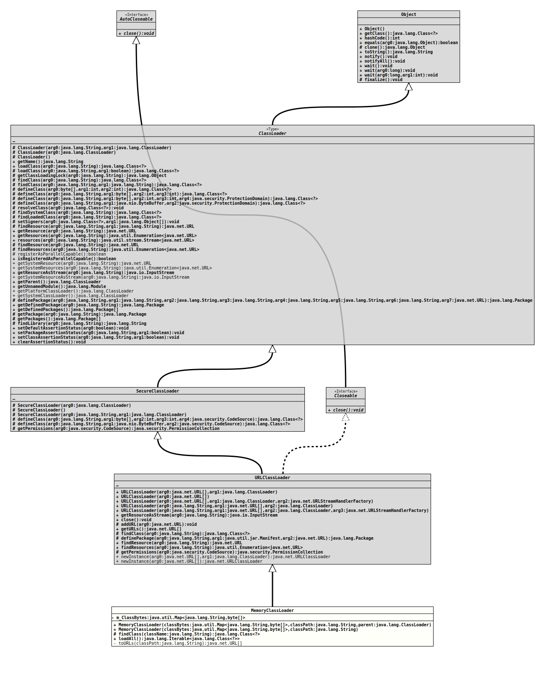

Class MemoryClassLoader
java.lang.Object
java.lang.ClassLoader
java.security.SecureClassLoader
java.net.URLClassLoader
org.tquadrat.foundation.scripting.internal.MemoryClassLoader
- All Implemented Interfaces:
Closeable,AutoCloseable
@ClassVersion(sourceVersion="$Id: MemoryClassLoader.java 1070 2023-09-29 17:09:34Z tquadrat $")
@API(status=INTERNAL,
since="0.0.5")
public final class MemoryClassLoader
extends URLClassLoader
An implementation of
ClassLoader
that loads .class bytes from memory.- Author:
- A. Sundararajan
- Modified by:
- Thomas Thrien (thomas.thrien@tquadrat.org)
- Version:
- $Id: MemoryClassLoader.java 1070 2023-09-29 17:09:34Z tquadrat $
- Since:
- 0.0.5
- UML Diagram
-

UML Diagram for "org.tquadrat.foundation.scripting.internal.MemoryClassLoader"
{kind=link}
-
Field Summary
FieldsModifier and TypeFieldDescriptionThe byte code that was loaded by this class loader instance. -
Constructor Summary
ConstructorsConstructorDescriptionMemoryClassLoader(Map<String, byte[]> classBytes, String classPath) Creates a newMemoryClassLoaderinstance.MemoryClassLoader(Map<String, byte[]> classBytes, String classPath, ClassLoader parent) Creates a newMemoryClassLoaderinstance. -
Method Summary
Methods inherited from class java.net.URLClassLoader
addURL, close, definePackage, findResource, findResources, getPermissions, getResourceAsStream, getURLs, newInstance, newInstanceMethods inherited from class java.security.SecureClassLoader
defineClass, defineClassMethods inherited from class java.lang.ClassLoader
clearAssertionStatus, defineClass, defineClass, defineClass, defineClass, definePackage, findClass, findLibrary, findLoadedClass, findResource, findSystemClass, getClassLoadingLock, getDefinedPackage, getDefinedPackages, getName, getPackage, getPackages, getParent, getPlatformClassLoader, getResource, getResources, getSystemClassLoader, getSystemResource, getSystemResourceAsStream, getSystemResources, getUnnamedModule, isRegisteredAsParallelCapable, loadClass, loadClass, registerAsParallelCapable, resolveClass, resources, setClassAssertionStatus, setDefaultAssertionStatus, setPackageAssertionStatus, setSigners
-
Field Details
-
m_ClassBytes
The byte code that was loaded by this class loader instance. The name of the class is the key to the map, the value is the byte code of that class.
This is a reference to a map instance maintained elsewhere!
-
-
Constructor Details
-
MemoryClassLoader
Creates a newMemoryClassLoaderinstance.- Parameters:
classBytes- The reference for the buffer with the byte code.classPath- TheCLASSPATH.parent- The parent class loader; can benull.
-
MemoryClassLoader
Creates a newMemoryClassLoaderinstance.- Parameters:
classBytes- The reference for the buffer with the byte code.classPath- The classpath.
-
-
Method Details
-
findClass
- Overrides:
findClassin classURLClassLoader- Throws:
ClassNotFoundException
-
loadAll
Loads all the classes that are loadable by this classloader.- Returns:
- All the classes.
- Throws:
ClassNotFoundException- A class could not be loaded.
-
toURLs
Translates theCLASSPATHstring into an array ofURLs.- Parameters:
classPath- TheCLASSPATHstring.- Returns:
- The URLs.
-